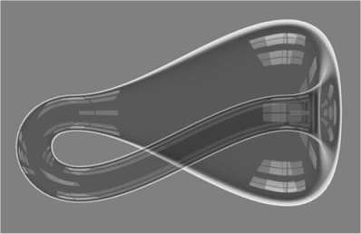

Felix Klein
25.4.1849 Düsseldorf - 22.6.1925, Göttingen
Im Jahr 1875 gelang es, Felix Klein nach München zu holen. Als Nachfolger von Hesse, den Bauernfeind bei der Gründung 1868
berufen hatte, oblag Klein die Formierung der Mathematik an einer höheren technischen Lehranstalt, die 1877 nicht nur zur
"Technischen Hochschule" umbenannt wurde, sondern auch im Geiste ("vollständige, theoretische Ausbildung für einen
technischen Beruf") an die Universitäten angeglichen wurde. Zusammen mit Alexander von Brill leitete er das neugeschaffene
"Mathematische Institut" und führte eine Neuerung ein, die bald auch von den übrigen Technischen Hochschulen Deutschlands
übernommen wurde: die Zusammenfassung aller
mathematischen Vorlesungen für Ingenieurstudenten der ersten vier Semester in einem Zyklus "Höhere Mathematik I-IV". Aus
den an der Technischen Hochschule gewonnenen Erfahrungen entwickelte sich Kleins späteres aktives Eintreten für die
Ingenieurwissenschaften, für die angewandte Mathematik und Physik und für enge Kontakte zwischen Universität, Technischer
Hochschule und Industrie.
Zur Ausbildung der Lehramtskandidaten hielten Klein und Brill höhere mathematische Vorlesungen und Seminare. Darüber schreibt
Klein: "So habe ich in München besonders über anschauliche Geometrie der algebraischen Gebilde, über die Theorie der
Gleichungen fünften Grades, die sich auf der Ikosaedergruppe aufbauten, über zahlentheoretische Probleme und über die
Geometrische Funktionentheorie, insbesondere elliptische Modulfunktionen, gearbeitet. Man sieht aus diesen Angaben, dass ich
damals den Grund zu den meisten Untersuchungen gelegt habe, die jetzt in Bd. II und III meiner gesammelten Abhandlungen
vereinigt sind. Überhaupt habe ich mich in München nach den Vorbereitungsjahren in Erlangen zur eigentlichen mathematischen
Individualität durchgearbeitet". (Göttinger Professoren (Lebensbilder von eigener Hand): Felix Klein. Mitteilungen des
Universitätsbundes Göttingen 5 (1923) 1, S.20)
Felix Klein war auch einer der Initiatoren der Enzyklopädie der mathematischen Wissenschaften. Dazu bemerkt W. Wirtinger: "Ursprünglich von Burckhardt und F. Meyer als Wörterbuch geplant, wurde in den vorbereitenden Beratungen auf Antrag Dycks jenes weitere Programm gestellt, mit dem Ziele, dadurch ein Gesamtbild der Stellung zu geben, die die Mathematik in der heutigen Kultur einnimmt. Hier war es Klein, der zusammen mit Dyck von allem Anfang an dem Unternehmen seine ganzen persönlichen Beziehungen, seine umfassenden wissenschaftlichen Interessen und grosses Organisationstalent mit voller Hingabe widmete. Er selbst hat ausser ausgedehnten vorbereitenden Arbeiten und eingehender Teilnahme an den einzelnen Bänden besonderes Verdienst durch die Durchführung und Vollendung des vierten, der Mechanik gewidmeten Bandes". (Wirtinger, W.: Klein und die Mathematik der letzten fünfzig Jahre. Die Naturwissenschaften 7 (1919) 287-288)
Neben Kleins fundamentalen Originalarbeiten zu Geometrie, Algebra und Funktionentheorie erlangten vor allem seine Bücher grundlegende Bedeutung, so seine Vorlesungen über das Ikosaeder und die Auflösung der Gleichungen vom 5. Grade, seine gemeinsam mit Sommerfeld herausgegebene Theorie des Kreisels, seine unvollendet gebliebenen Vorlesungen über die Entwicklung der Mathematik im 19. Jahrhundert (die erst nach seinem Tode erschienen und die mathematischen Leitideen dieses Jahrhunderts meisterhaft darstellen) sowie seine Vorlesungen über nicht-euklidische Geometrie (bearbeitet und nach seinem Tode herausgegeben von W. Rosemann) und seine Vorlesungen über höhere Geometrie (bearbeitet und nach seinem Tode herausgegeben von W. Blaschke).
Felix Kleins Tatkraft ging über die mathematische Forschung und Lehre sowie über Fragen der Organisation weit hinaus. Er war auch in der Vertretung seiner Wissenschaft und ihrer Interessen nach aussen unermüdlich tätig. Er war ein eifriger Förderer der mathematischen Bildung, er war Mitbegründer der "Internationalen Kommission zur Förderung des mathematischen Unterrichts (IMUK)" und von Anfang an ihr Vorsitzender. Sein zweibändiges Werk Elementarmathematik vom höheren Standpunkt aus, das sich vorwiegend an Lehrer wendet, besticht in der mathematischen Literatur auch heute noch durch seine lebendige und klare Darstellung.
Im Jahre 1886 verliess Klein Leipzig und folgte einem Ruf nach Göttingen, wo er - weiterhin in intensiver Wechselwirkung mit dem mathematischen Geschehen seiner Zeit - bis zu seinem Lebensende wirkte.
Friedrich L. Bauer, Oswald Giering
Technische Universität München, Fakultät für Mathematik
Quelle: http://www-m8.mathematik.tu-muenchen.de/hm/geschichte/node18.html (teilweise gekürzt)

Felix Klein veröffentlichte 1882 eine Verallgemeinerung des Möbius'schen Bandes. Eine Klein'sche Flasche ist eine endliche gekrümmte Fläche im vierdimensionalen Raum, die keinen Rand und nur eine Seite besitzt. Das Bild zeigt ein Modell einer solchen Flasche, wobei zu beachten ist, dass es sich nur um eine Projektion der Flasche im vierdimensionalen Raum handelt, die sich im dreidimensionalen Raum leider selbst schneidet.